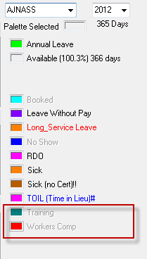

Home > Helpdesk

Tutorial
We have an employee who has gone on Workers Comp from 6/3/12 and will be on it for the entire month of April.
We are trying to block him out in the Availability screen, however, Workers Compensation is locked. How do we unlock this screen? or do we do this in another area? |
|
Introduction
The availability screen as shown here does indeed have a number of options inactive (inaccessible). This is an indicator that the logic has been switched off or is under controlled access (such as user level access restictions). In the case of this screen, it is the fact that coding logic has been switched off due to a major re-write of the functionality.
Option: Using the adhoc shift screen
In order to book the employee to Workers Comp for the required period ( whole of April), we suggest that you:
- Create adhoc shifts covering the whole of the period required. (note to not include the weekends in the schedules, unless explicitly required).
- Set the shift type to 'Workers Comp' on creation of the adhoc shift. If your system does not have a workers comp schedule type, create one.
- Assign the employee to the adhoc shifts being created.
Explanation
The availability screen provides for a bulk schedule of forward events for an employee. Most often used to book annual leave in advance, and set future availability. It in effect carries out the Option 1 steps in a more intuitive
Top of Page
See Also
 PowerForce Controls PowerForce Controls
Creating scheduling codes
|